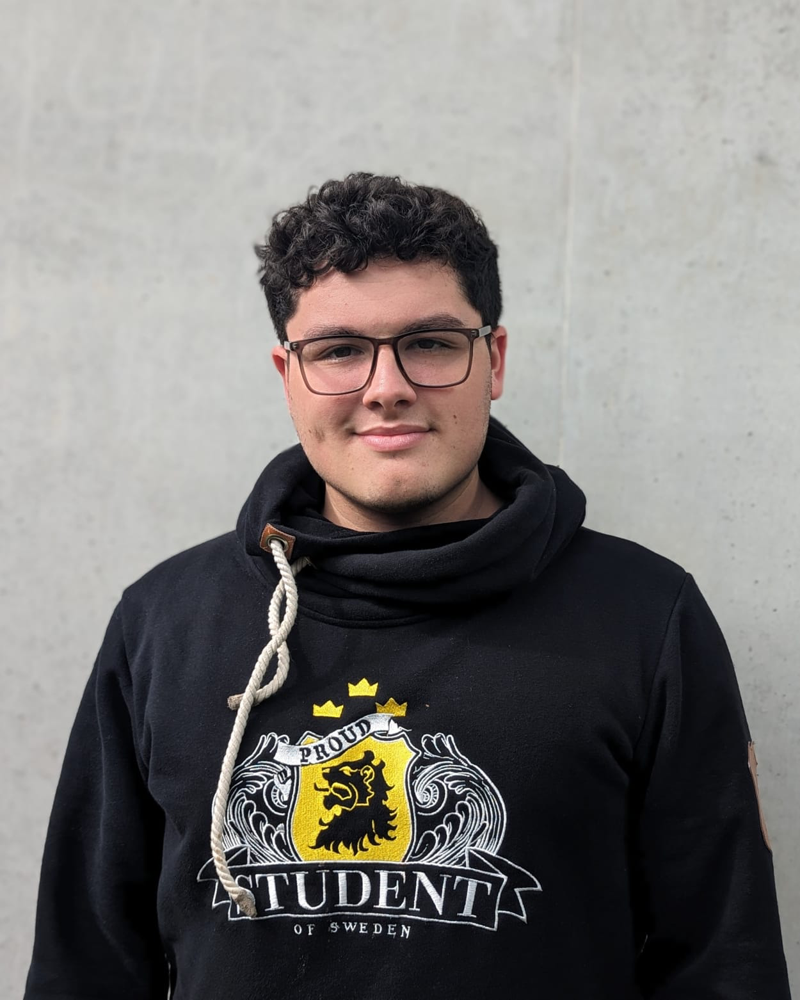

Pablo Peña
Entre construir sistemas y acompañar personas.

Soy Pablo Peña, estudiante de Ingeniería Civil Informática en la Universidad Católica de la Santísima Concepción. Mi trabajo se mueve entre dos ámbitos que se complementan: el desarrollo de soluciones tecnológicas y el acompañamiento en procesos de aprendizaje.
En el ámbito técnico, me he enfocado en plataformas de datos y automatización: desde soluciones de Business Intelligence y procesos ETL, hasta el desarrollo de sitios web y asistentes basados en inteligencia artificial. Disfruto especialmente los proyectos donde la tecnología simplifica procesos que antes dependían de trabajo manual o conocimiento muy especializado.
En paralelo, ejerzo como tutor universitario y participo en iniciativas de difusión académica. Me interesan profundamente las relaciones humanas y cómo estas influyen en el desarrollo profesional y personal de las personas; ayudar a otros a crecer es algo que me mueve genuinamente, más allá de cualquier herramienta o tecnología que use en el camino.
Esta doble trayectoria —construir sistemas y acompañar procesos de aprendizaje— define la forma en que abordo cada proyecto: con rigor técnico y con atención a las personas que usan o aprenden de lo que se construye.
BlackBox
Aplicación ETL para automatizar procesos contables, con conexión directa al SII. Descarga, procesa, edita y exporta registros en un formato compatible con el software contable — automatizando el manejo de grandes volúmenes de información.
Intrava-B8 — Plataforma de BI
Con módulo ETL no-code para archivos Excel de empresas mineras. Datos crudos convertidos en decisiones, sin depender de trabajo manual.
Asistente con IA — RAG local
Diagnóstico de errores en procesos contables mediante recuperación aumentada. Conocimiento especializado, al alcance de más personas.
Data sintética de refinería de petróleo
Scripts en Python que generan datos sintéticos de una refinería de petróleo a partir de reglas físicas, para entrenar y validar modelos de machine learning y análisis cuando los datos reales escasean.
Adkintum
Plataforma de predicción, mediante machine learning, de emergencias ambientales en una refinería de petróleo.
Sitio web corporativo — Quantum Consulting
Remodelación completa del sitio: rediseño de interfaces y de la estructura de navegación para reflejar mejor la identidad y los servicios de la consultora.
Analista Funcional TI — Quantum Consulting
Levantamiento de requerimientos, optimización de procesos e implementación de soluciones TI para automatización, integración y análisis de datos. Vínculo entre las necesidades operativas y las soluciones tecnológicas en plataformas de gestión y contabilidad.
Práctica profesional — Quantum Consulting
500 horas. Construí la plataforma de integración BlackBox (arquitectura e interfaz), lideré la remodelación del sitio corporativo, implementé un VPS Windows con escritorio remoto para trabajo contable seguro y desarrollé scripts en Python de data sintética basada en reglas físicas para modelos de machine learning.
Tutor universitario — UCSC
Lógica y Estructuras Discretas (desde abr. 2023) · Fundamentos de Mecánica (desde abr. 2026). Tutor certificado por la Dirección de Innovación UCSC.
Líder de alfabetización digital — U. Santo Tomás
Lideré un equipo de cuatro estudiantes UCSC en un taller para adultos mayores: 9 sesiones enseñando el uso de aplicaciones móviles básicas, acompañándolos para que se sintieran más seguros con la tecnología.
3er lugar — Open Innovation AVA × UCSC
Líder de equipo. Propuesta de una plataforma con IA para monitorear el avance de proyectos y anticipar desviaciones.
Ponencia — Uso ético de la IA
«Uso especializado de la IA: autonomía en el aprendizaje de los tutorados». Sobre cómo la IA, con criterio pedagógico, amplía el proceso formativo sin reemplazar al tutor.
Reparación y asesoría en computación
Emprendimiento independiente: cambio de componentes, instalación de programas, mantención y limpieza de equipos, y asesoría cercana para que cada cliente entendiera y aprovechara mejor su computador.
Ingeniería Civil Informática — UCSC
En curso · 5° año · titulación esperada 2027. Tutor certificado por la Dirección de Innovación UCSC.